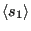
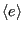
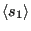
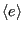

Next: Suggested Exercises Up: Case Study 1: The Previous: Main Program: Final Outputs
Let's run the code for an  =40 lattice for the following values of temperature: 5.0, 4.0, 3.0,
2.0, 1.0. At each temperature, we'll run six separate simulations with a unique random number generator seed. Fig. 4 shows the average magnetization
 and the average energy per spin
 vs. temperature, with each simulation contributing a unique point.
=40 lattice for the following values of temperature: 5.0, 4.0, 3.0,
2.0, 1.0. At each temperature, we'll run six separate simulations with a unique random number generator seed. Fig. 4 shows the average magnetization
 and the average energy per spin
 vs. temperature, with each simulation contributing a unique point.
|
|
What is happening here? Clearly, as the temperature decreases, the average energy per spin approaches -2; this makes sense because the spins will tend to align with their neighbors. However, when we look at the average magnetization, we see that is zero at high temperatures but then can seemingly approach either +1 or -1 as the temperature goes down. This is because of symmetry breaking: although either all-up or all-down is equally likely, once it falls toward one it won't ever climb back out and go to the other. So we see some magnets go to all -1 and others to all +1.
Symmetry-breaking is an important phenomenon in molecular simulations. The impact is has is to prevent exploration of state space because of barriers that are only extremely rarely overcome when resolving state-to-state transitions microscopically. In the low- Ising magnet, the all-up and all-down states are equally likely, but once one is committed to, the other will never practically be explored. Why is this significant? Many systems have state spaces like this, where there are two or more high-probability regions separated by large regions of low probability. Sampling based on local moves in state space can almost never overcome such barriers, meaning such simulations are likely never truly ergodic. None of the MC simulations below about
Ising magnet, the all-up and all-down states are equally likely, but once one is committed to, the other will never practically be explored. Why is this significant? Many systems have state spaces like this, where there are two or more high-probability regions separated by large regions of low probability. Sampling based on local moves in state space can almost never overcome such barriers, meaning such simulations are likely never truly ergodic. None of the MC simulations below about  = 2.2 for an Ising simulation are ergodic!
= 2.2 for an Ising simulation are ergodic!
cfa22@drexel.edu